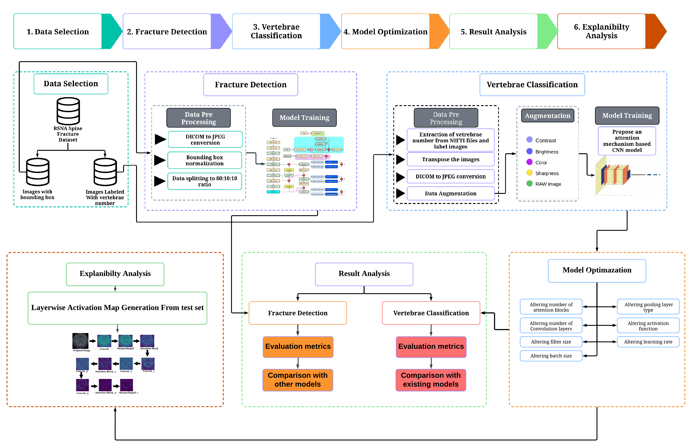
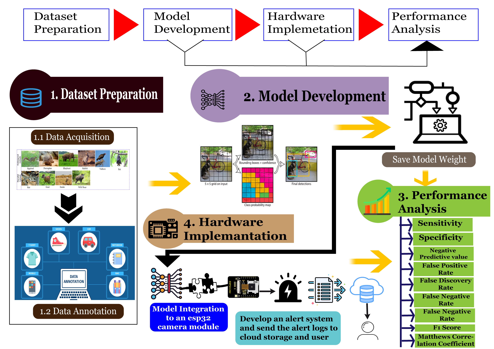

Focused on computer vision, machine learning, and real-world systems. My interests include scalable AI, efficient deep learning, and visual intelligence in healthcare, sports analytics, and satellite imagery.
United International University, 2020–2024
Thesis: A Computer Vision Approach for Illegal Bowling Action Detection in Cricket
Supervisor: Prof. Swakkhar Shatabda

